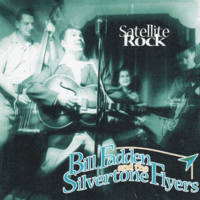

Bill Fadden and the Silvertone Flyers - Satellite Rock (Album, 2003)
01 - This Boy's Moving On (2:27)
02 - You're Gonna Have To Bawl (2:11)
03 - What'll You Do (1:53)
04 - Rocket Powered Daddy (2:25)
05 - Tracking My Baby Down (2:30)
06 - Foolish Thoughts (1:38)
07 - Shake Rock-A-Bop (2:11)
08 - I Hope You Cry (2:20)
09 - Too Bad Baby (2:03)
10 - My Search (2:07)
11 - Hot Rod V8 Rumble (1:58)
12 - Stubborn Boy (2:36)
13 - I've Got Another Love (2:24)
14 - Crazy Lovin' (2:26)
15 - I Fell In Love (2:31)
16 - Satellite Rock (2:07)
17 - House Rent Blues (2:18)
© Western Star Recording Company :: [WSRC 003]
Notes
reference information: Discogs®
Review
025/366 (Project 366)
Perfect recordings. And I have to take a vacation for such a release. Otherwise - not enough time for proper listening.
Songs like "Satelite Rock", "Shake Rock-A-Bop" and such a cover like "My Search" are really sure shots!